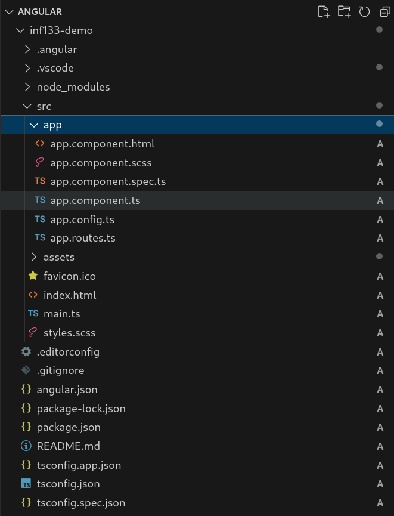
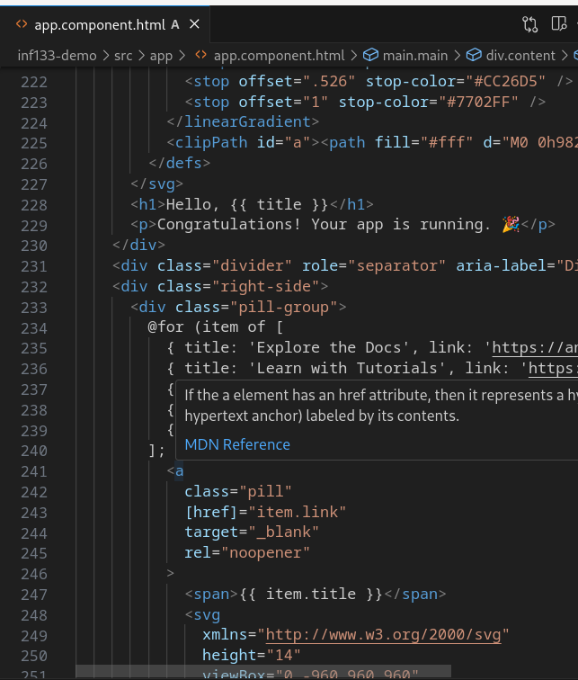

Web Frameworks
INF 133 User Interaction Software
Week 5
Goals for Today
By the end this lecture, you should be able to...
- Explain how Angular implements the component architecture
- Describe the role of an Angular component
- Implement an Angular component which follows the MVC architecture
Web Communication
https://en.wikipedia.org/wiki/Donald_Bren_School_of_Information_and_Computer_Sciences

Client Side

Server Side
Most of what you have worked on so far follows this static model
When you make a change to your code, how do you check it?
The modern web revolves around asynchronous HTTP requests.
Nearly every modern page that you load is making thousands of HTTP requests in the background without you knowing!
Asynchronous HTTP Requests using Fetch
(as JavaScript loaded on your web page)
Using fetch to communicate between browser and server
Browser (mydomain.com)
Server (mydomain.com)
Browser (mydomain.com)
Server (anotherdomain.com)
Browsers implement a same-origin policy to protect the data you have open in the browser.
Web Communication
Client Side
- Runs in browser
- Changes happen in real-time
- Cannot make HTTP requests to many APIs
Server Side
- Runs as process on server (CLI interface)
- Changes happen in response to HTTP requests
- Can make HTTP requests to most APIs
Web Communication
Historically client and server made use of different languages
Unified Web Development Language
Demand for asynchronous interactive web: NodeJS
- Event-driven, non-blocking I/O model
- Build on Google's V8 JavaScript engine
- Node Apps programmed with JavaScript, lower threshold!
- Generally good for highly interactive websites
- Better options for websites dependent on high computation
NodeJS
JavaScript in the client and on the server
In the client
- View debug output in browser console
On the server
- View debug out on the command line
NodeJS
What does Node provide?
- By itself, a powerful, but rudimentary server
- Foundation for building complex, highly interactive websites
- Ability to use
fetch to query other servers (APIs), lower threshold!
Simple Server in NodeJS
Open up server.js and add the code above
Simple Server in NodeJS
Let's walk through the code
Uniform Resource Locator
https://api.spotify.com/v1/me
Protocol
How to handle the information
Host
Who has the information
Resource or Endpoint
What information you want
Recall the URL overview from Week 1...
The browser assumes you are making a GET request
In Node, you need to specify the type of request and response!
Simple Server in NodeJS
When run, visiting http://localhost:8001/ will return GET / in the browser and on the command line
HTTP Overview
HTTP Verbs
GET: return current state of resourcePOST: add a new resource (e.g., record)PUT: update an existing resource to a new statePATCH: update a portion of the resource's stateDELETE: remove the resourceOPTIONS: return a set of methods that can be performed on resource
HTTP Responses
200: OK201: Created400: Bad request403: Forbidden404: Not Found500: Internal server error
Let's Run It!
If you don't have Node install, this won't work for you (that's okay!)
Simple Server in NodeJS
Add some more practical functionality...
A webserver needs to be able to open and read files!
Let's Run It!
- http://localhost:8001/
- http://localhost:8001/nofile.html
- http://localhost:8001/people
Now we are ready to asynchronously fetch data from a webserver
Fetching data from a NodeJS server
Open up fetch-demo.js and add the code above
Understanding Asynchronous Requests
Fetch requests are asynchronous, so they happen simultaneously with the rest of the code
After the request is sent, the next line of code is executed without waiting for the request to finish
If the request did wait, what would happen?
Understanding Asynchronous Requests
Benefits of async
- Internet communication can be unstable/inconsistent
- Non-blocking async requests allow the UI to remain 'snappy'
- Avoid lost interest from person using your website!
Understanding Asynchronous Requests
JavaScript applies the concept of a Promise to manage async requests
Rather than the requested data, a promise is returned. You then add a callback to be fulfilled when the operation is complete
The callback function parameter will receive the fulfilled response payload
Understanding Asynchronous Requests
The fetch API provides the json() method to help extract the data from the response
BUT! The json() method also returns a promise :)
So we use function chaining to assign a callback to the second promise, which will contain the data in its parameter
Understanding Asynchronous Requests
It's always good practice to add error handling.
Understanding Asynchronous Requests
Async/Await
- Alternative mechanism to Promise/then
- Streamlines the Promise/then approach:
- Improved readability and maintainability
- More straightforward error handling (cleaner use of try/catch)
- Debugging is simplified due to linear code execution
- Linear execution is easier to reason about
- Usage largely depends on type of asynchronous requests that your application makes, development ecosystem, and organizational preferences
Fetching data with Async/Await
Open up fetch-demo.js and replace the Promise/then version of fetchData with the code above
Using async/await, the fetch and data processing occurs in an asynchronous function that will await the results
Note that any function that uses await must be marked as async
More Fetch
fetch() defaults to a GET request
fetch() can optionally take a second options parameter (as a JSON dictionary)
Let's Review
JavaScript, HTML, CSS, Server Side, Fetch, HTTP Verbs, and so on...
Starting to feel 'unwieldy,' yes/no?
Generally, as scale and complexity increases, so does the need for:
- Structure and organization
- Reusable UI
- Modularity
Many Frameworks
(I know, Angular is not the most popular)
Most Frameworks Follow a Design Pattern
- MVC: Model, View, Controller (Angular 1)
- MVVM: Model, ViewModel, View (Vue.JS)
- Component Based (React, Angular 2)
There are many others, but we will look more closely at the differences next week
Angular's Component Architecture
- Components are assembled into a hierarchy, starting with root
- Root is the default for all Angular projects
Angular's Component Architecture
- Components include a class (app.component.ts) that holds data and logic
- Components include CSS and an HTML template that represent the data as a view

Angular's Component Architecture
- The template combines HTML and Angular markup, using binding and directives
- Binding connects application data to the HTML before DOM is rendered
- Directives connects application logic to the HTML before DOM is rendered

Angular's Component Architecture
- New components can be automatically generated using the ng tool
Angular's Component Architecture
- Components can then be imported into each other
- First, identify the component selector
Angular's Component Architecture
- Then, import to desired component
Angular's Component Architecture
- Finally, add component to HTML template
Angular's Component Architecture
- Four types of binding
- Interpolation:
{{ }}
Surround variable with double braces
Angular's Component Architecture
- Four types of binding
- Interpolation:
{{ }}
- Property binding:
[ ]
Surround attribute with single brackets, variable assigned as quoted value
Angular's Component Architecture
- Four types of binding
- Interpolation:
{{ }}
- Property binding:
[ ]
- Event binding:
( )
Surround event name with single parens, function assigned as quoted value
Angular's Component Architecture
- Four types of binding
- Interpolation:
{{ }}
- Property binding:
[ ]
- Event binding:
( )
- Two-way binding:
[( )]
Surround event or property name with bracket and parens, vairable assigned as quoted value
Angular's Component Architecture
- Structural Directives
- Conditionally create or dispose views:
NgIf
Angular's Component Architecture
- Structural Directives
- Conditionally create or dispose views:
NgIf
- Repeat items from a list:
NgFor
Angular's Component Architecture
- Components can specify inputs
- Inputs send data from parent to child
Angular's Component Architecture
- Components can specify outputs
- Outputs send data from child to parent
Angular's Component Summary
- Angular is a component based client-side framework
- Data moves between template and data/logic using binding
- Template views can be manipulated by directives
Assignment 3
Bring everything covered today together!